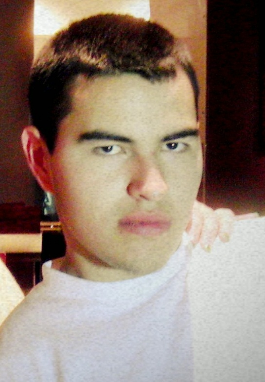

Now Let's Talk A Little About Us
 CEO-Leslie Freud
CEO-Leslie Freud
Graduating top of her class in Mechanical Engineering, with a Master's in Computer Programming, she has the highest security clearance possible. Leslie is constantly tracking with space satellites to see what is happening even in the smallest of towns. She is currently developing an independent robot militia to defend against the zombies.
PRESIDENT-Christina Badass (pronounced Ba-dass)
Christina is Zombies 'R Us' resident Zombie Guru. Anything related to what will or will not work is directed towards her. She is fully trained in artiller and hand-to-hand combat. Christina is also one of our Strategic Planning Specialists. universities and Government agencies regularly book her services for traing seminars and Survival Simulations.
VICE PRESIDENT-Candis Badass (pronounced Ba-dass)
Graduating top of her class with a Master's in Biology, Candis began travelling the globe to study infectious diseases. Due to this experience, she has a vast knowledge in biological warfare and viruses. She is currently testing infected subjects to gain a better understanding of the disease in hopes of maybe finding a cure for those not yet having gone through the change.
DIRECTOR OF OPERATIONS-Sean Killing Bear
Zombies 'R Us resident Tracker, Survivalist, and Warfare Specialist. Last year, Sean became the International Zombie Ambassador, working with domestic and foreign governments and militias. He is a Master in seven different Martial Arts, and is also our Gun Instructor.
OUR MISSION
Zombies 'R Us is here to not only wake up the living to the truth, but also to possibly teach people how to survive the Zombie Apocalypse.
When the will defies fear, when duty throws the gauntlet down to fate, when honor scorns to compromise with death - that is heroism.
- Robert Green Ingersoll